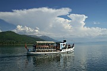
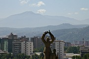

Republic of Macedonia :: A Closer Look
|  |
Lake OhridLake Ohrid is Macedonia's most poular holiday destination, with a wealth of places to visit including Ohrid town, Struga, Vevčani, Sveti Naum and Galičica National Park. |
|  |
Skopje and SurroundingsA guide to the best bits of Macedonia's much-maligned but intriguing capital, plus excursions to Tetovo and scenic Lake Matka. |

|
Pelagonia: Prilep, Bitola, and KruševoOhrid is not the only attraction in the southwest of Macedonia. The area around Prilep and Bitola is much less visited by tourists, but it boasts a wide range of attractions including the country's highest town and one of its most atmospheric monasteries. |

|
The Cyrillic Alphabet in the BalkansIf you are going to travel through Macedonia, especially by public transport, it helps to be able to read the Cyrillic Alphabet. This page has a table of Cyrillic characters and their equivalents in the Latin alphabet. |